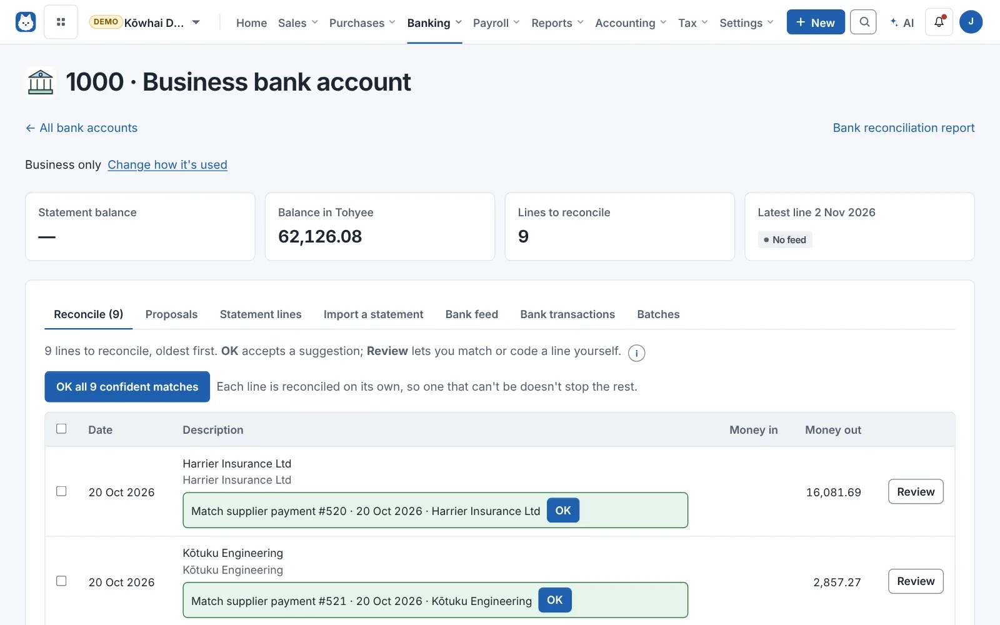
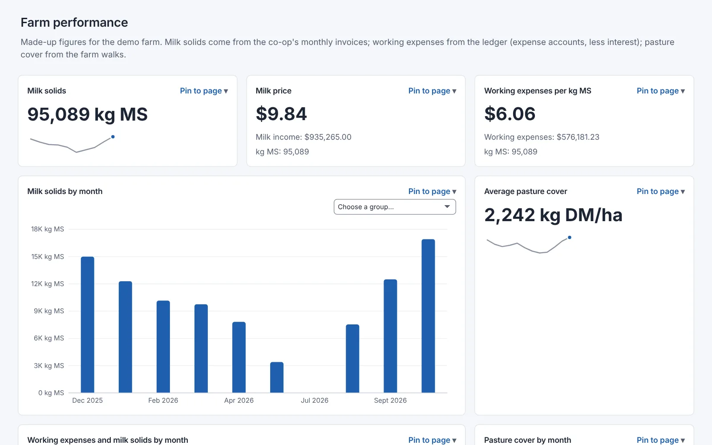
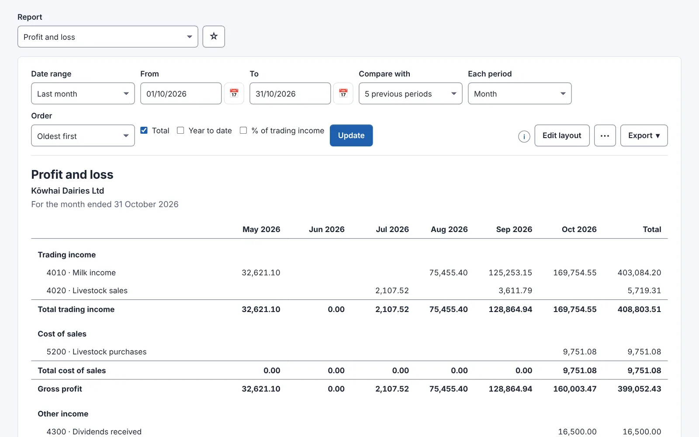
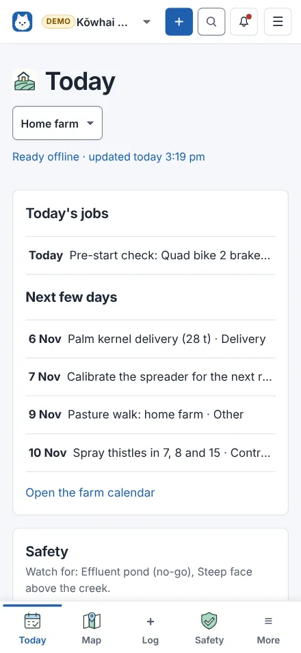
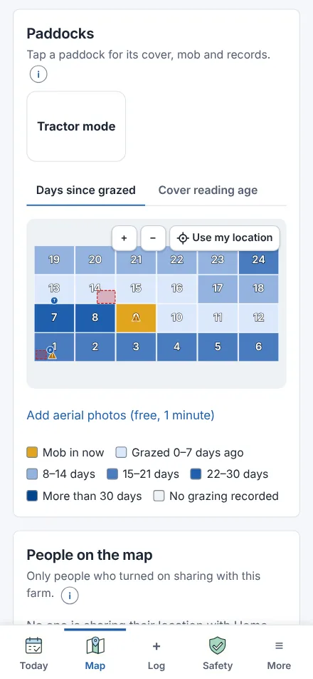

Accounting
From the first invoice to year end.
Invoices, bills, bank feeds, reconciliation and financial reports.
Made in New Zealand · Open source
The books. The customers. The bigger picture.
A workspace that brings it all back to you.
Free software. Your own server. Room to grow.
Less jumping between tools
Start with the books. Add the tools your work needs. Keep your customers, people and numbers within reach.
Accounting
Invoices, bills, bank feeds, reconciliation and financial reports.
CRM
Customers, leads, deals and follow-ups in a shared workspace.
Analytics
Connect data, prepare tables and build interactive reports.
Farming
Maps, pasture, livestock, safety and field records across your farms.
People & jobs
NZ payroll, timesheets, rosters, projects and site visits.
Your AI
Connect compatible AI apps through MCP, with access you choose.
See what you're working with
Follow a transaction, explore a report or plan the week. Here’s Tohyee with its fictional demo farm.
Bring in bank feeds or statement files. Match payments, use bank rules and keep the original transaction behind the numbers.
Explore banking
Bring together spreadsheets and connected databases. Build report pages with charts, filters and drill-down, then share the view with your team.
Explore analytics
Profit and loss, balance sheet, budgets and year-end statements. Move from an overview to the records that explain it.
Explore reporting
Actual product screenshots. Fictional Kōwhai Dairies demo data. Screens may differ by release.
From the desk to the paddock
Take maps, jobs and field records with you. Switch between farms and give staff access to the places they work.
Maps, pasture, grazing, livestock and fertiliser records.
Hazards, incidents, pre-start checks and effluent logs.
Selected farm information offline, with supported entries queued for sync.
Phone and Android features still need real-device testing. GPS is an estimate; browser recording has background limits. Safety records do not certify compliance.


Ownership, built in
Run Tohyee on a computer you control. Open it in a browser. Invite your people, choose their access, and keep a separate database for each organisation.
Explore the sourceAGPLv3 software, free to run and inspect. Hosting, hardware and third-party services may have their own costs.
Bank feeds, Shopify, email, data sources and compatible AI apps. Each connection has its own setup and permissions.
Encrypted backups and restore tools help you move or recover your organisations. Running your own server means looking after it, too.
Make it yours
Install the server, open your workspace and try the demo before bringing in your own books.
Early development. Review accounting outputs before relying on them. Feature availability follows the release you install.
A few useful details
No. Accounting, CRM, analytics, payroll and jobs work for other businesses too. Farming is a separate part of the workspace.
Yes, with remote access configured. Use HTTPS and follow the setup guide. You control accounts and permissions; self-hosting still needs updates, backups and secure access.
The web app works in a browser, with installation options depending on your device. Selected farm workflows support offline use. An optional Android APK adds device features; it is not an iPhone app. See the mobile guide for current limits.
Connect a compatible AI app from Tohyee’s AI settings. You choose the organisation and access level. Depending on that level, AI can read data, create drafts or post changes—read-only access is available.
The release notes and downloads describe each packaged release. The feature register covers current source, limitations and work in progress.